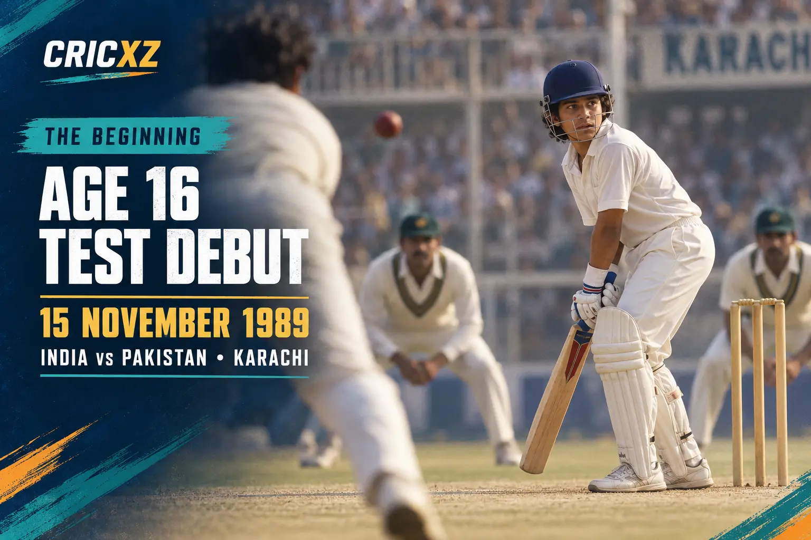

Test
- Matches
- 200
- Innings
- 329
- Not outs
- 33
- Runs
- 15,921
- Highest score
- 248*
- Batting average
- 53.78
- Strike rate
- 54.04
- Hundreds
- 51
- Fifties
- 68
- Wickets
- 46

Sachin Tendulkar scored 34,357 runs and 100 centuries across Test, ODI and T20I cricket during an international career spanning from 1989 to 2013.
Career statistics are final.
Tendulkar retired from international cricket in November 2013. The figures above were verified against ICC career records and ESPNcricinfo's statistical profile.
Sachin Tendulkar played 664 international matches and scored 34,357 runs. His 51 Test hundreds and 49 ODI hundreds made him the first and only player to reach 100 international centuries.

Tendulkar made his Test debut against Pakistan in Karachi on 15 November 1989 at the age of 16. That appearance began an international career that would continue for 24 years and end with a record 200 Test matches.
15 November 1989 – 16 November 2013
Debuted against Pakistan in Karachi and completed his 200th Test against West Indies in Mumbai.
18 December 1989 – 18 March 2012
Debuted against Pakistan in Gujranwala and made his final ODI appearance against Pakistan in Dhaka.
1 December 2006
Played his only T20 international against South Africa in Johannesburg.
Finished his career with 15,921 Test runs, 18,426 ODI runs and 10 T20I runs.
Scored 51 Test hundreds and 49 ODI hundreds, the highest combined international total.
Became the first cricketer to play 200 Test matches.
Scored an unbeaten 200 against South Africa in Gwalior, becoming the first man to make an ODI double-hundred.
Helped India win the 2011 World Cup and finished as India's leading run-scorer in the tournament.
Was inducted into the ICC Cricket Hall of Fame six years after his final international match.
Received India's national sporting honour after establishing himself in international cricket.
Became the first cricketer to receive India's highest sporting honour.
Received India's fourth-highest civilian award.
Received India's second-highest civilian award.
Became the first sportsperson to receive India's highest civilian award.
Received the BCCI's lifetime achievement honour for his contribution to Indian cricket.
Compare Tendulkar's career with Virat Kohli's international stats and records, or browse more CricXZ player profiles.